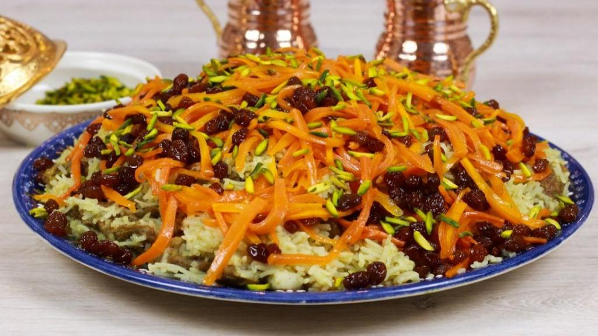

جزئیات غذا

قابلی پلو
توضیح: قابلی پلو یکی از غذاهای مجلسی افغانستان است که با گوشت، برنج، زردک و کشمش تهیه میشود.
مواد لازم:
- ۲ پیمانه برنج باسمتی
- ۵۰۰ گرم گوشت گوساله یا گوسفند
- ۱ عدد پیاز
- نصف پیمانه کشمش
- ۱ عدد زردک بزرگ خلالشده
- ادویهجات: نمک، فلفل، زردچوبه، زیره
- روغن
طرز تهیه:
- گوشت را با پیاز و ادویهجات میپزیم تا نرم شود.
- برنج را شسته و به صورت جداگانه آبکش میکنیم.
- زردکها را در روغن سرخ کرده و کشمش را کمی تفت میدهیم.
- گوشت، زردک و کشمش را لایهلایه با برنج دم میدهیم.
- حدود ۳۰ دقیقه اجازه میدهیم قابلی دم بکشد.
دیزاین شده: توسط سپیده خطیبی